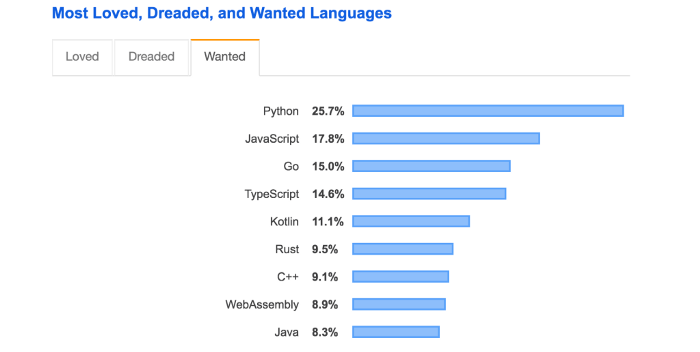
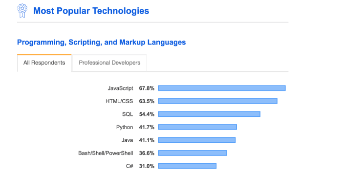

Top 3 Programming Languages To Learn
Several surveys and research have identified Python, JavaScript, and Java as the
top programming languages. In this post, we’ll take a closer look at each of these languages to
see what distinguishes them and how they differ.
Python.
Python is one of the most widely used programming languages. It is really simple to use and
clutter-free.
Python is the most desired programming language of the year, according to a 2019 Stackoverflow
survey of developers. This isn’t surprising, given Python’s reputation as a developer-friendly
language.

How Does Python Code Look?
Let’s write some code to get a better understanding of Python’s syntax. Let’s develop a simple
program to determine whether the number entered by the user is odd or even.
num = int(input("Enter a number to check if odd or even: "))
if (num % 2) == 0:
print("{0} is Even".format(num))
else:
print("{0} is Odd".format(num))
If you’re unfamiliar with Python, you’ll note that its syntax is somewhat different from those of
other programming languages. Curly braces, classes, and public/private modifiers are all absent.
It’s quite straightforward and clutter-free. One of the reasons Python is so popular among
programmers is because of this. Let’s take a look at the output of the above program.
Enter a number to check if odd or even: 56
56
56 is Even
Here’s a quick rundown of why Python is one of today’s most popular programming languages.
Simple to use.
Free of clutter in code.
Easy to learn for beginners of programming.
Best suited for machine learning, AI projects and research.
Follows Object Oriented Paradigms.
Can be used to build frontend and backend applications.
Extensively used by data scientists.
Huge community support.
why Python?
Python is a popular and developer-friendly programming language, yet every programming language
has flaws. Here’s a list of reasons why Python might not be the best choice.
Python is rarely used for mobile development due to the availability of various frameworks such
as React Native and Flutter, as well as native languages such as Swift and Java. As a result,
you won’t find any Python-based mobile apps.
Other programming languages are difficult to learn if Python is your first language. You may
fall in love with its simplicity and find it difficult to learn other programming languages.
When migrating from Python to another programming language, such as Java, it may appear
complicated.
Python isn’t widely utilized in large-scale software development — Python isn’t widely used in
enterprise software development in major corporations. In comparison, languages like Java and
JavaScript are utilized more frequently. Python is slower at runtime and has database access
limits. Python’s database access layer is inferior to JDBC or ODBC, making it unsuitable for
large-scale applications.
Java
Java is the second most popular programming language to learn in 2021. Java is one of the most
popular programming languages, and it will be an excellent language to learn in 2021.
Let’s have a look at some Java Code
Let’s recreate the Python application we created earlier in Java. The application verifies
whether the number entered by the user is odd or even.
import java.util.Scanner;
public class EvenOdd {
public static void main(String[] args) {
Scanner reader = new Scanner(System.in);
System.out.print("Enter a number: ");
int num = reader.nextInt();
if(num % 2 == 0)
System.out.println(num + " is even");
else
System.out.println(num + " is odd");
}
}
It’s worth noting that the syntax is completely different from Python’s. We’ve covered topics
like class, public/private access, scanner, and more. In comparison to languages like Python,
Java programs are more organized. In Java, everything must be contained within a class or
interface.
Why Java?
Here’s a brief overview on why you should learn Java:
Java is used in enterprise software applications — One of the main reasons to learn Java is that
it is used to construct large-scale apps in many tech businesses around the world. Java is used
in the tech stacks of top firms such as Uber, Airbnb, Twitter, and many others. As a result,
obtaining work as a Java developer is pretty simple.
Performance — Java apps are faster than dynamically typed languages because they are optimized
for performance. The JVMs have been upgraded and are fast, making it ideal for huge projects.
Android Development — Java is used in the development of native Android applications. If you
want to work as a mobile developer who focuses on creating native Android apps, knowing Java is
a good idea.
Huge Community — Java has been a popular programming language for more than a decade, and it has
a sizable community behind it. When you first start learning Java, you’ll come across a plethora
of tools, forums, and books to assist you.
Platform and Tools — The Java ecosystem has changed over time, and there are now a variety of
amazing tools and IDEs that assist Java development, such as IntelliJ, Eclipse, and others.
Why not Java?
Let’s have a look at why Java isn’t an option.
Verbose Code — Java code is quite verbose, which can be confusing to a new programmer. This
indicates that the code has a lot of boilerplate, which some developers may find tedious. You
can see how verbose Java is by comparing the code snippets from our example above.
Older Language — Alternatives to Java are increasingly popular among newer developers and
startups. This is because it is an older programming language, and they would rather learn a
newer, cutting-edge programming language. If you want to work for startups or with cutting-edge
technology, you might wish to learn a new programming language.
Javascript
In a study performed by StackOverflow, JavaScript was recognized as the most popular programming
language for the seventh year in a row.

Code in JavaScript
We’ve built a function isEven that takes an integer and examines if it’s even or odd in the code
snippet below. The console.log file is used to record the console’s response. The end-user will
not be able to see this. Developers can use console logging for testing and debugging purposes.
function isEven(num) {
if (num % 2 === 0) {
console.log(num + " is even");
return true;
} else {
console.log(num + " is odd");
return false;
}
}
Why JavaScript?
In the year 2021, there are lots of reasons why you should learn JavaScript.
It is used everywhere — JavaScript is used in almost all current frontend applications nowadays.
There is no way to avoid or disregard JavaScript while developing modern frontend software.
Lots of modern frameworks — There are many high-quality JavaScript frameworks and tools
available nowadays to help with frontend development. Many frameworks, such as React, Vue,
Angular, React Native, and others, are commonly utilized to construct modern frontend
applications.
Developer Friendly and Ease of Learning — JavaScript is a beginner-friendly language, and
newcomers to the language tend to fall in love with it. This could be due to a variety of
circumstances. The language itself is enticing to developers, and the current ecosystems that
are available to enable development further enhance the developer experience.
Job Opportunities — JavaScript programmers are in high demand around the world. Many Fortune 500
firms, such as Google, Facebook, and Uber, have extensively invested in JavaScript development,
resulting in a large number of job openings in the JavaScript sector.
Both Frontend and Backend Development —It’s worth noting that, while JavaScript dominates the
frontend development scene, it’s also actively used in backend development with frameworks like
Node.js. This means that you can be a frontend and backend developer with contemporary
JavaScript.
Speed — JavaScript app runs fast Because all of the code runs on the client-side.
Why not JavaScript?
Rapidly Changing: Depending on how you look at it, this might be a pro or a con. JavaScript and
its frameworks are fast-changing, and JavaScript today is way different than what it was three
years ago. The fact that it is always changing implies that it has a lot of momentum and
community involvement. It can, however, be difficult to keep up with.
Security Concerns: On the client-side, JavaScript code is performed, and the code is normally
exposed. As a result, if best practices are not followed during development, security breaches
may occur.